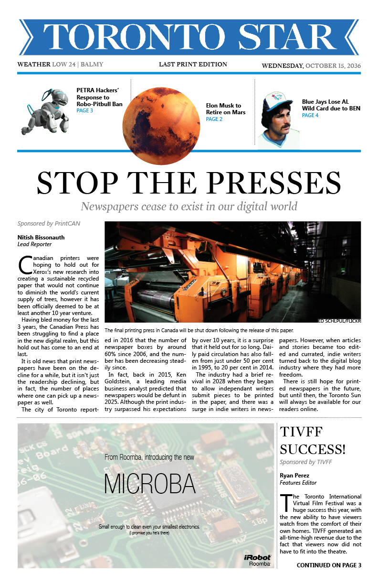
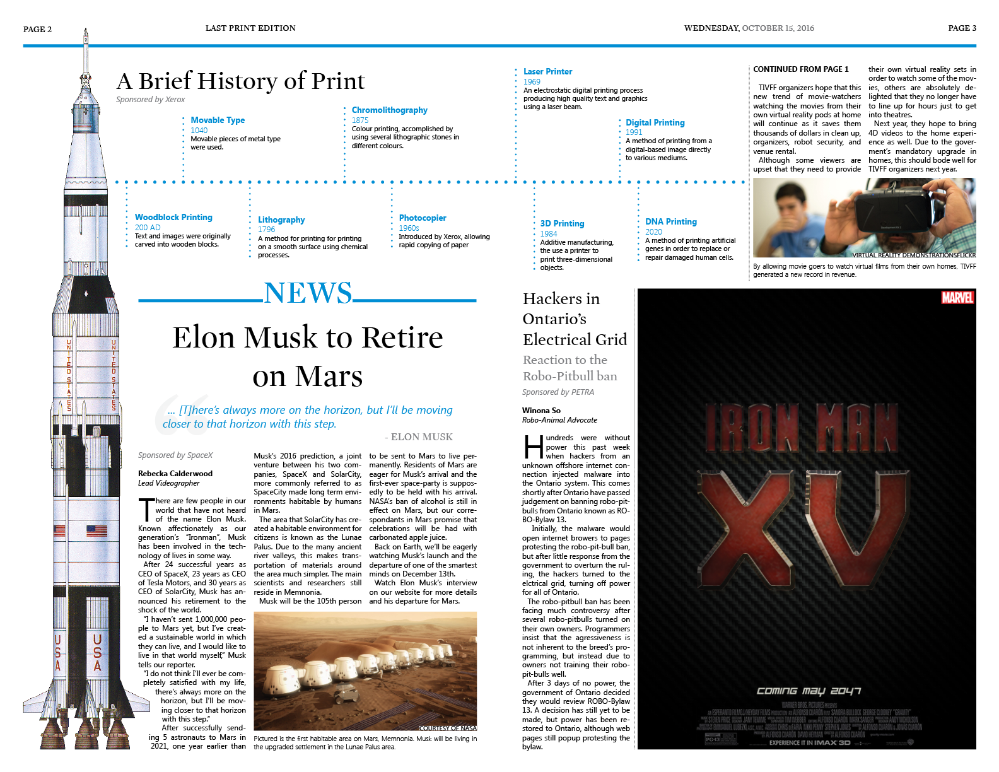
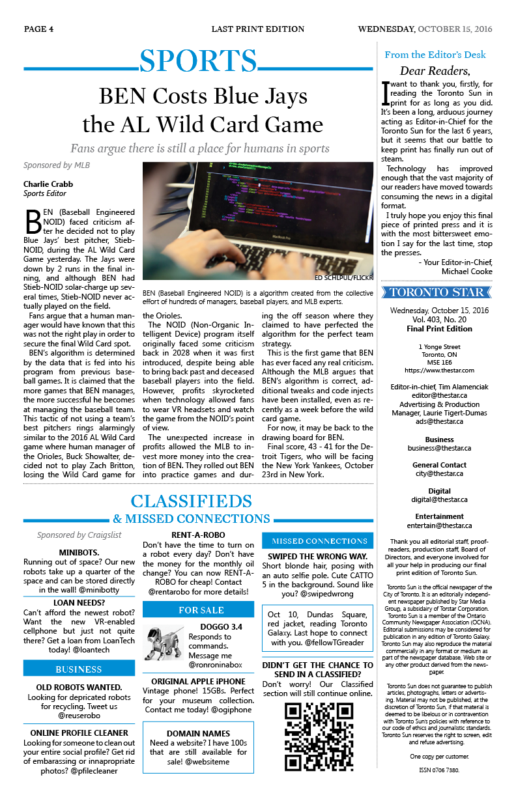
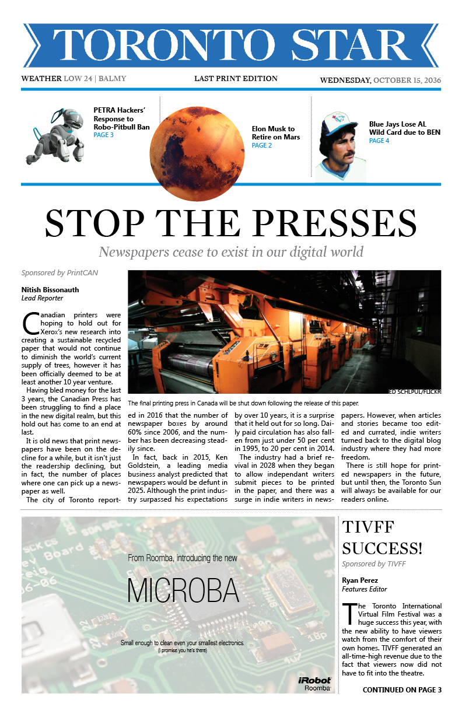
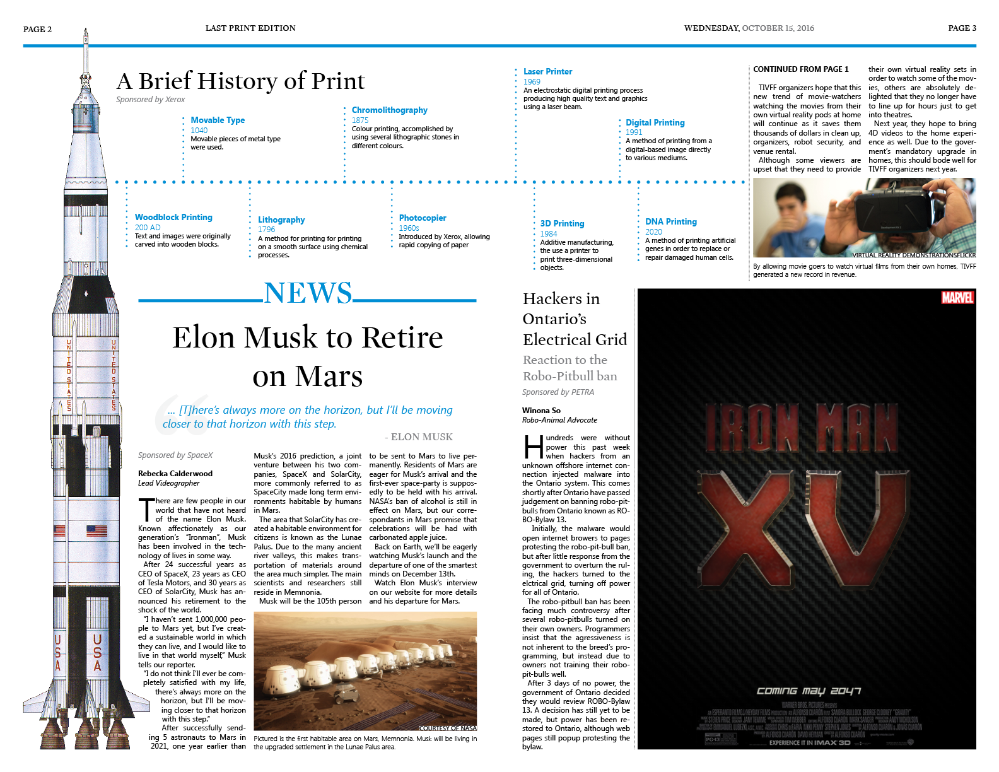
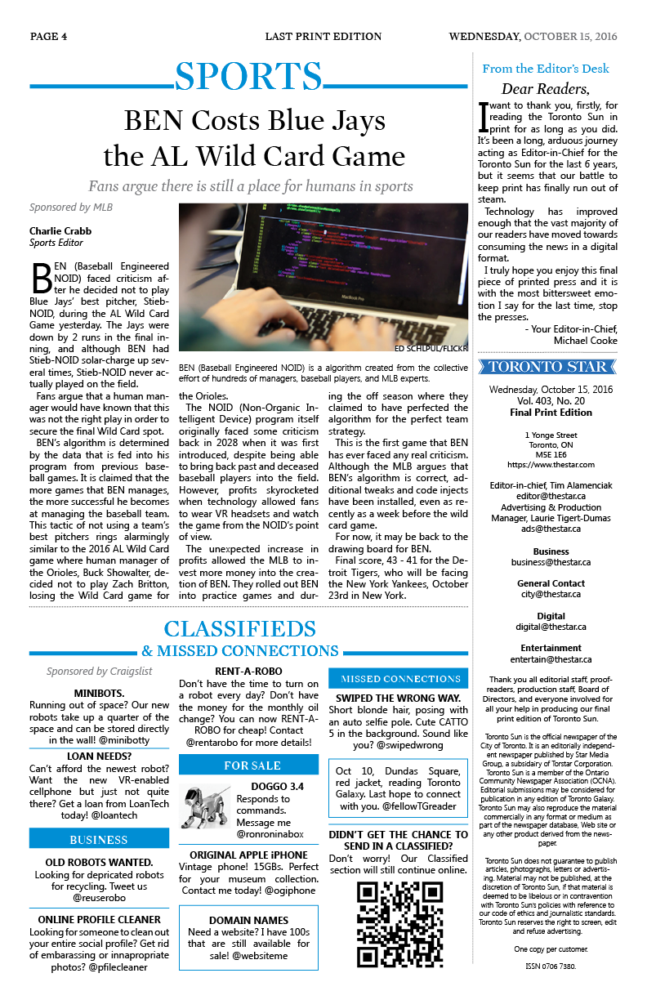

Classwork
Relics from the Past: The Last Printed Newspaper
Designer, Writer
Relics from the Past: The Last Printed Newspaper is a futuristic newspaper imagined from the year 2036, designed during my Masters of Digital Media at Ryerson University. I designed and wrote all pieces that went into this mock newspaper.
 




